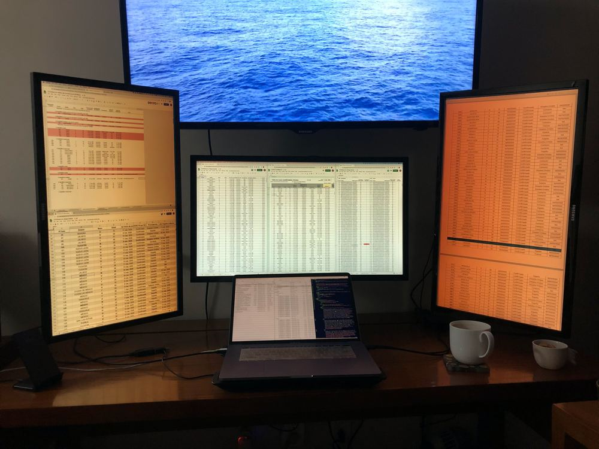

ü¶†üá≤üáΩ Covidatos.mx
Actualizado 8 de Abril, 2020.
{kind=link}
{kind=link}
¡Bienvenid@! Soy Eli y desde el 14mar2020 mantengo diario este tablero del coronavirus en México para canalizar mi ansiedad en una forma constructiva. üôÇ Uso el comunicado t√©cnico que publica la Secretar√≠a de Salud alrededor de las 19:00 horas todos los d√≠as a la par de su conferencia de prensa. (Sus datos tienen corte a las 13:00 y frecuentemente los gobiernos estatales tienen resultados más actuales pero es demasiado trabajo para mi compilarlos. Este tablero si intenta llevar un conteo as√≠.)
Estoy al pendiente todas las noches pero me toma varias horas actualizar este tablero. üòÖ ¿Por qu√©? Sobretodo porque las tablas del gobierno no incluyen fecha de publicaci√≥n del caso (tan solo vienen resaltados los casos nuevos del d√≠a, y no siempre es correcto el resaltado). Entonces, para tener fechas correctas tengo que estar cotejando tablas de ayer y de hoy. Cada d√≠a hay nuevas inconsistencias por reconciliar (quitan, reacomodan y entremezclan casos sin dar explicaci√≥n) y guardo las más importantes como anotaciones. Esto cambio el 6abr, ahora hago la conciliaci√≥n automática en bit.ly/conciliacionCovid.
Publico este trabajo tambien como una hoja de cálculo de Google en bit.ly/covid19mexico. Ahí estan mis anotaciones que mencionaba y las tablas fuentes fechadas de confirmados y sospechosos. Puedes descargarlo todo como csv, Excel o crear tu propia copia en linea y jugar con los datos de forma más interactiva!
Me ayudo del genial procesamiento PDF a CSV del repositorio covid_ctd_mx. También recomiendo el trabajo meticulosamente anotado del repo de carranco-sga. Como gobierno inexplicablemente no guarda sus hist√≥ricas tablas de confirmados y sospechosos, las estoy archivando. (Serendipia tambien mantiene un archivo lindo de CSVs.)
Si ves algún error, tienes alguna duda o sugerencia de mejora no dudes en contactarme via Twitter.
¡Ojala te sea útil este trabajo! üíõ
-Eli Parra (@elzr)
Mapa de calor: casos
Los mapas de calor/color a continuación fueron inspirados en gráficas parecidas del físico Yaneer Bar-Yam. Me pareció una forma genial de ver como van avanzando los casos por región, ¿no crees? Afortunadamente la adaptación ha gustado pero me gustaría hacerla más clara todavía. Experimenté con una versión animada pero es tardado hacerla y no he tenido tiempo de actualizarla.
En fin, te la platico un poco. Los estados de M√©xico estan a ambos lados ↓ ordenados por su número total de casos a la fecha (estan repetidos para que te sea mas facil identificar las filas). El eje de izquierda a derecha ↔ es el tiempo y empezamos con el 28 de febrero hasta hoy que se dieron los primeros casos hasta hoy. El color va de verde (0) hasta rojo oscuro (más de 80 casos). Las categor√≠as de color las ir√© adaptando conforme vaya progresando la epidemia. ¡Va a ser lindo cuando empiecen a reducirse los casos y se ti√±a de verde el mapa!
La primera versión es de casos cumulativos (total hasta la fecha) y la segunda es solo casos nuevos ese día. Ambas usan la misma escala de color a casos. Si le das click en cualquiera de las imagenes verás una versión en grande de alta resolución.
{kind=link}
{kind=link}
Mapa de calor: defunciones
{kind=link}
{kind=link}
Procedencia, fecha, edad
Estas gráficas se dejan de actualizar desde la gran discontinuidad de casos del 6abr2020 :(. La columna de procedencia por ejemplo cambió mucho el 6abr y ya no lo publican desde el 8abr2020.
{kind=link}
Eso es todo, ¡hasta mañana!
